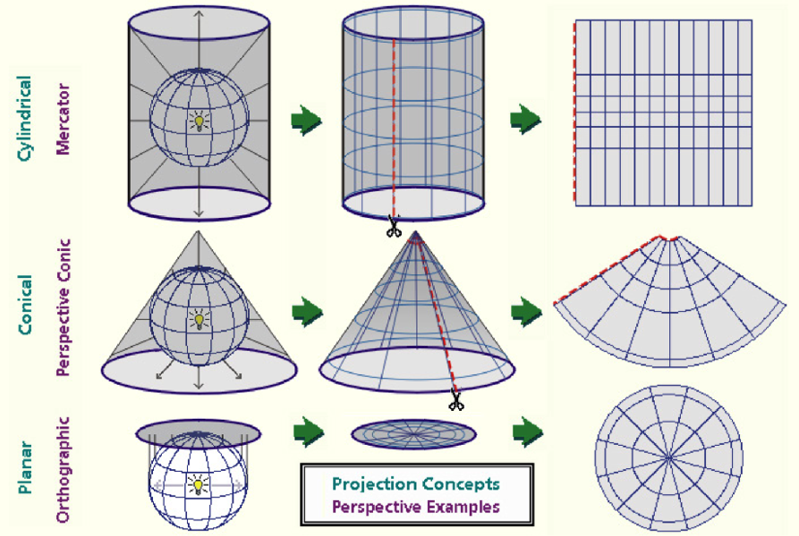

3. Geographic Data#
Coordinate Reference System (CRS)#
Ellipsoid: Shape of Earth’s surface is not perfect sphere, but squashed
Geoid: More accurate representation of Earth’s ellipsoid, considers gravitational potential to estimate mean sea level
Datum: Defines the coordinate axis fixed reference points for measuring any point on Earth’s curved surface
ex) The North American Datum (NAD 83) is a horizontal datum and NAVD 88 is a vertical datum
Geographic CRS (3D): Latitude, Longitude for referencing location on Earth’s curved/ellipsoid surface. For global-scale projects. Distance is distorted.
ex) Web Mercator
Projected CRS (2D): Earth’s curved surface projected onto a 2D surface. Distortion occurs during projection, but the goal is to choose a projection method that limits your project area’s Easting & Northing distances from the Datum in order to minimize the distortion type critical for your project.
Types: Conformal projections preserve angular distortion, equidistant projections preserve distance, and equal area projections preserve area.
ex) Due to its long shape (elongated North to South), California is divided into 6 State Plane (CASP) Zones. For each CASP Zone, a Lambert conformal conic projection is optimal do to the East-West elongation and mid-latitude location.

Projection Wizard: Tool to find appropriate projection based on your project area
EPSG: public registry of CRS information. Spatial Reference System Identifier (SRID) is typically associated with a well-known text (WKT) string definition of the coordinate system, consistent with an EPSG code.
EPSG 4326 - Unprojected/Geographic - Used for GPS field survey devices & raw survey data
EPSG 3857 - Projected - Used for features published in web maps
PROJ.4 String: Multiple parameters needed to describe a CRS
ex)
+proj=merc +a=6378137 +b=6378137 +lat_ts=0.0 +lon_0=0.0 +x_0=0.0 +y_0=0 +k=1.0 +units=m +nadgrids=@null +wktext +no_defs
CRS Reprojection: Transforms geographic data as rasters or vectors between different coordinate reference systems.
Common Data Types & Formats#
Vectors#
Vectors represent objects as features (point, line, or polygon shape) with tabular data containing attributes/fields values for each geometry.
ESRI feature class: homogenous collection of features (points, lines, or polygons) and can be stored in geodatabases, shapefiles, coverages, or other data formats. For instance, in an ESRI file geodatabase a feature classes can be annotations.
ESRI shapefile: A set of files (.shp, .shx, .dbf, & .prj) that contain one feature class
Databases: SQLite, MS Access, PostgreSQL, ESRI file geodatabase
GeoJSON: JSON
featureshavepropertiesandgeometryKML/KMZ: for Google Earth Pro
Geoparquet: Supports columnar data storage making it a faster alternative to .csv files
Networks:#
Set of connected objects in geographic space to answer questions about connections and flow.
Contain elements (as nodes/points/junctions, connections/lines/edges, and turns). May involve adjacency matrix calculation.
Can be multimodal (using roads, railways, and buses)
Rasters#
Rasters are grids of cells, or pixels, with values that represent continuous fields (for example: elevation, temperature, light reflected from Earth’s surface)
Tagged Image File Format (.tiff or .tif) - Platform-independent image format
GeoTIFF - Tiff with metadata for geographic information
Band sequential (BSQ) - Optimal for accessing any part of a single band (spatial). Data is written one band at a time. Must have an associated ASCII file header (.hdr)
Band interleaved by pixel (BIP) - Optimal for accessing multiple bands (spectral). Data for each pixel is written band by band. Must have an associated .hdr
Band interleaved by line (BIL) - Compromise allowing for easy access of spectral and spatial information. Pixels are written band by band for each line, or row. Must have an associated .hdr
netCDF - multidimensional rasters, often time-series
Hierarchical Data Format v5 (HDF5) - Supports large, heterogeneous data. uses a ‘file directory’ structure
Cloud Optimized Geotiff (COG) - GeoTiff hosted on a HTTP file server
Image Resolution#
Spatial = raster pixel or cell size
Refers to the smallest detectable object, or amount of granularity/precision
Fine resolution = small pixel size
Coarse resolution = large pixel size
Temporal = data collection frequency
Spectral = number and width of spectral bands collected by a sensor
Radiometric = bits / number of possible data values
Light Detection and Ranging (lidar)#
Often used to create 3D digital surface height models (DSM) and digital elevation models (DEM).
Lidar file formats:
ASCII: raw lidar data
LAS: 3D point clouds with XYZ (lon-lat-ele) values
LAZ (zipped LAS)
Tools:
libLAS: reading & writing LAS
rapidlasso: LAS processing
GRASS: LAS processing with QGIS
Computer Automated Design (CAD)#
Files from typical CAD software (AutoCAD & Microstation):
.dxf (drawing exchange format): Platform-independent 2D & 3D vector files
.dwg: AutoCAD 2D & 3D vector files
.dgn: MicroStation 2D & 3D vector files
Data Transformation#
Refers to transferring / converting geospatial data between formats – Python objects, ESRI geodatabases, and other RDBMS such as SQL Server.
Data Converter:#
OSGEO GDAL#
Available vector and raster drivers
ogr2ogr from OSGeo4W Shell:
shp → gpkg:
ogr2ogr -f “ESRI Shapefile” “input.shp” “output.gpkg” “layer”
Postgres → gpkg:
ogr2ogr -f PostgreSQL “PG:user=your_username password=your_pwd dbname=your_dbname” out_filename.gpkg
gpx → gpkg (for all gpx files in current directory):
for /R %f in (*.gpx) do ogr2ogr -f “GPKG” out_filename.gpkg “%f”
CAD ↔ SHP:#
DXF to shp QGIS Plugin
PostgreSQL ↔ Python (geopandas):#
Cursors are database objects that work with tables (for instance: reading or writing) one row at a time
import pandas as pd
import psycopg2
def df_to_postgres(df, table_name, db, usr, pwd, localhost="localhost", port="5432"):
try:
conn = psycopg2.connect(database = db, user = usr, password = pwd, host = localhost, port = port)
cur = conn.cursor()
col_names = df.columns.to_list()
for i in range(0 ,len(df)):
values = tuple(df[col][i] for col in col_names)
cur.execute("INSERT INTO {} ({}) VALUES({})".format(table_name, ", ".join(col_names), ", ".join(["%s"] * len(col_names))))
conn.commit()
except (Exception, psycopg2.Error) as error:
print("Error while fetching data from PostgreSQL", error)
finally:
if conn:
cur.close()
conn.close()
print("PostgreSQL connection is closed")
def postgres_to_df(SQL_query, db, user="postgres", pwd="", host="localhost", port=5432):
try:
conn = psycopg2.connect(database=db, user="postgres", password=pwd, host=host, port=port)
cur = conn.cursor()
cur.execute(SQL_query)
items = cur.fetchall()
hits=[]
for row in items:
hits.append(row)
col_names = [desc[0] for desc in cur.description]
hits_df=pd.DataFrame(hits, columns=col_names)
if ("lat" in col_names and "lon" in col_names):
hits_gdf = gpd.GeoDataFrame(hits_df, geometry=gpd.points_from_xy(hits_df.loc[:,'lon'],hits_df.loc[:,'lat'], crs="EPSG:4326"))
return hits_gdf
else:
return hits_df
except (Exception, psycopg2.Error) as error:
print("Error while fetching data from PostgreSQL", error)
finally:
if conn:
cur.close()
conn.close()
print("PostgreSQL connection is closed")
GIS Data Standards#
Improve geographic information’s utility & value by increasing its interoperability, reusability, reliability, and access.
Example of City of Fremont CAD standards
International Organization for Standardization (ISO) standards must be purchased. The American National Standards Institute (ANSI) serves as the US member agency to ISO and provides easier access to the standards and, generally, at a lower cost.
Open Geospatial Consortium (OGC) is a diverse array of international groups (govt, academia, private, etc.) using geospatial data, settling on standards for sharing & integrating data.
OGC publishes the following documents: 1) implementation standards, 2) abstract specifications, 3) best practices, 4) engineering reports, 5) discussion papers, and 6) change requests.
Standards:
Data Encoding:
Data Access:
Processing:
Visualization:
Federal Geographic Data Committee (FGDC) is a U.S. interagency group with the same mission
FGDC standards list includes standards from FGDC, along with OGC and ISO
GIS metadata standards:#
ISO 19115: Geographic information — Metadata
ISO 19139: Geographic information — Metadata — XML schema
FGDC Content Standard for Digital Geospatial Metadata (CSDGM) to Create System-level Metadata Records
Metadata creation best practices:#
Gather all information together & reuse information that is already developed, e.g. abstract, purpose, date from grant or funding proposals
Choose a descriptive title for your data that incorporates who, what, where, when, and scale.
Choose keywords wisely – consider all possible interpretations of your word choices.
Include as many details as you can in the metadata record for future users of the data.
Update the metadata date (date stamp) so that metadata repositories will know which version of the record is most recent.
DOI should go in the primary
in the Citation Information section and should be a URL.
Metadata validation:#
Compares the metadata standard to the XML metadata record to ensure it conforms to the structure of the standard, such that all of the required elements are filled in.
USGS best practices for Checking Metadata with Data with FGDC-CSDGM metadata
Publicly available data:#
Google Earth Engine: Data Catalog & Cloud Computing#
Data:#
ee.FeatureCollection#
category |
ee.FeatureCollection |
|---|---|
Google buildings |
“GOOGLE/Research/open-buildings/v3/polygons” |
ee.Image#
category |
ee.Image |
|---|---|
elevation |
ee.Image(“NASA/NASADEM_HGT/001”).select([‘elevation’]) |
elevation |
ee.Image(“USGS/SRTMGL1_003”).select([‘elevation’]) |
landcover |
“projects/mapbiomas-public/assets/paraguay/collection1/mapbiomas_paraguay_collection1_integration_v1” |
soil |
“ISDASOIL/Africa/v1/fcc” |
soil |
“ISDASOIL/Africa/v1/cation_exchange_capacity” |
soil |
“ISDASOIL/Africa/v1/cation_exchange_capacity” |
soil |
“ISDASOIL/Africa/v1/clay_content” |
soil |
“ISDASOIL/Africa/v1/carbon_organic” |
soil |
“ISDASOIL/Africa/v1/bedrock_depth” |
ee.ImageCollection#
name |
ee.ImageCollection |
|---|---|
US NLCD |
ee.ImageCollection(“USGS/NLCD_RELEASES/2021_REL/NLCD”).select(“landcover”) |
precip |
“UCSB-CHG/CHIRPS/DAILY” |
Sentinel-1 |
“COPERNICUS/S1_GRD” |
Sentinel-2 harmonized surface reflectance |
“COPERNICUS/S2_SR_HARMONIZED” |
Sentinel-2 cloud probability |
“COPERNICUS/S2_CLOUD_PROBABILITY” |
MODIS LST |
ee.ImageCollection(‘MODIS/006/MOD11A1’).select([‘LST_Day_1km’, ‘LST_Night_1km’, ‘QC_Day’, ‘QC_Night’]) |
Planet monthly basemaps |
“projects/planet-nicfi/assets/basemaps/americas” |
Planet monthly basemaps |
“projects/planet-nicfi/assets/basemaps/africa” |
Planet monthly basemaps |
“projects/planet-nicfi/assets/basemaps/asia” |